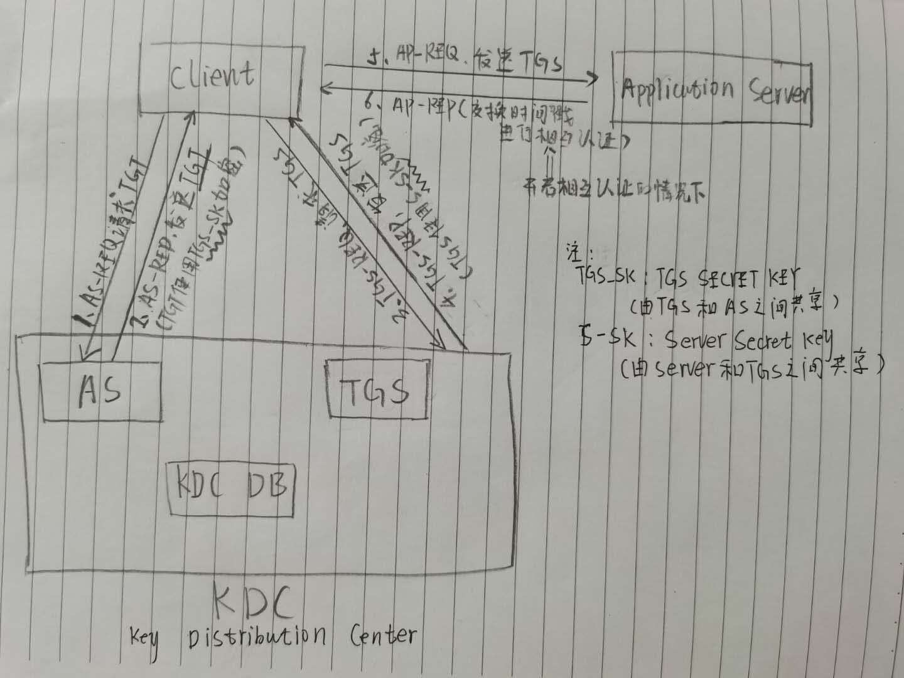

Kerberos简介：
Kerberos来源于希腊神话中的三头犬、寓意着需要第三方（密钥分发中心）来进行通信，即KDC永远不会和Client所要请求的Server进行通信（工具人！！！）
几乎每次互动，都会收到两条消息（一个用于响应，另一个则用于请求下一个服务）
Kerberos非常依赖加密密钥，所有通信步骤中都用到共享密钥


1、AS-REQ
Client将用户密码转换成NTLM hash，使用该hash对时间戳进行加密;然后将纯文本形式的时间戳以及身份信息[你的名称/ID、请求的服务名称/ID(这里为TGS：Ticket Granting Server)]、TGT生存期等）发送给AS
2、AS-REP
AS收到Client发送的身份信息，从KDC数据库中检索身份信息（只检查用户是否存在，而不检查用户凭据）。用户存在则生成一个随机的session key（会话密钥）[用于给Client请求TGS]
AS向Clinet发送两条消息：
消息1包含如下信息：[使用TGS SECRET KEY（同样存储在KDC数据库中）加密]—>也就是使用TGS密钥加密TGT
步骤1中用户提供的信息+TGS SESSION KEY
消息2包含如下信息：[使用用户密钥（也就是用户NTLM hash）加密]
TGS名称/ID
时间戳
TGS SESSION KEY
TGT生存期`消息1为Client所请求的TGT，但是由于没有TGS SCRECT KEY,所以无法解密，此时TGT存储在Client凭据缓存中 消息2解密后获得TGS SESSION KEY
3、TGS-REQ
(金票攻击发生在此步骤)
Client向TGS发送两条消息
消息1：[使用TGS SESSION KEY进行加密]
你的名称/ID
时间戳`消息2：[未加密消息]
所要请求服务的名称/ID
服务的有效生存期同时还会发送步骤2中收到的TGT。TGS收到Client信息，会先到KDC数据库中检查请求的服务是否存在
4、 TGS-REPTGS
使用TGS SECRET KEY解密得到未加密的TGT，包含TGS SESSION KEY,TGS SESSION KEY解密Client消息中的加密信息解密之后，TGS对如下信息进行检查
步骤3中消息1解密后得到的用户名称/ID与TGT的进行比较
步骤3中消息1解密后得到的时间戳与TGT中的进行比较（默认为2分钟
检查TGT是否过期
检查TGS缓存中是否已有该用户凭据，避免重播检查无误之后，同样向客户端发送两条消息
消息1：[生成的使用Service Secret Key加密后的TGS]—->Kerberos令牌
消息2：[TGS Session Key加密]
服务名称/ID
时间戳
票据生存期
Service Session Key5、AP-REQ
银票攻击发生在此步骤
Client使用TGS SESSION KEY解密得到SERVER SESSION KEY,然后使用SERVER SESSION KEY加密如下消息：
用户名称/ID
时间戳`该消息加密之后与和TGS一同发送给服务端服务端使用SERVER SECRET KEY解密TGS，验证完成，服务端允许Client在TGS中指定的时间内访问请求资源
6、AP-REP
启用相互认证的情况下，交换时间戳进行相互认证